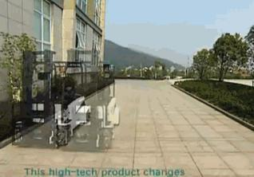
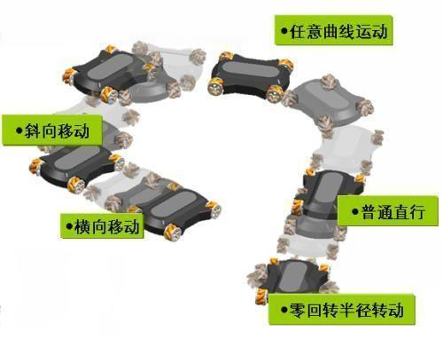
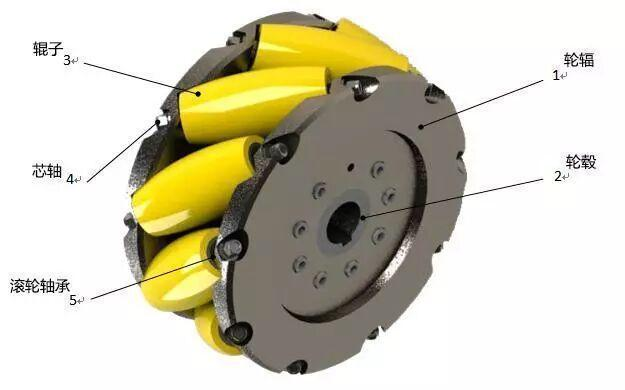
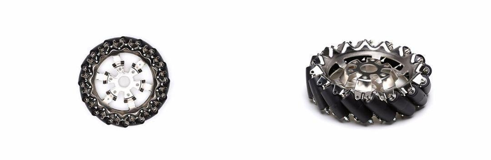
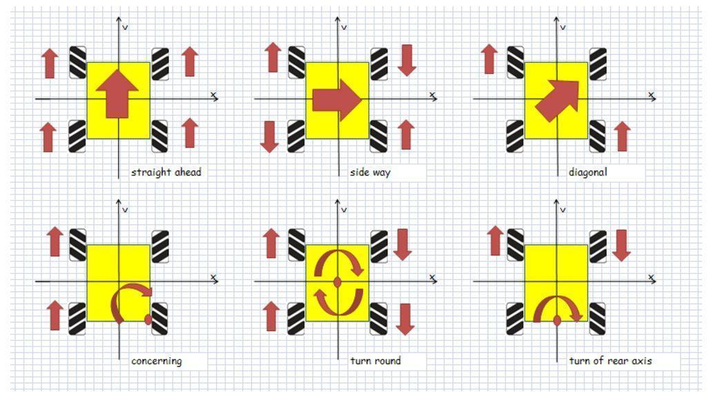

麦克纳姆轮
你是魔鬼吧 车还能这么开？

麦克纳姆轮是瑞典麦克纳姆公司的专利。这种全方位移动方式是基于一个有许多位于机轮周边的轮轴的中心轮的原理上，这些成角度的周边轮轴把一部分的机轮转向力转化到一个机轮法向力上面。
依靠各自机轮的方向和速度，这些力的最终合成在任何要求的方向上产生一个合力矢量从而保证了这个平台在最终的合力矢量的方向上能自由地移动，而不改变机轮自身的方向。

结构特点

在它的轮缘上斜向分布着许多小滚子，故轮子可以横向滑移。小滚子的母线很特殊，当轮子绕着固定的轮心轴转动时，各个小滚子的包络线为圆柱面，所以该轮能够连续地向前滚动。麦克纳姆轮结构紧凑，运动灵活，是很成功的一种全方位轮。有4个这种新型轮子进行组合，可以更灵活方便的实现全方位移动功能。

运作原理
视频中，白色箭头表示各个轮子的实际转动方向。

会在横向上卸力（特殊情况）、都要在比较平坦的地面使用、震动
优缺点
优点：
显而易见，麦克纳姆轮的运新方式无可比拟。在狭小空间里，麦克纳姆轮的灵活性体现的淋漓尽致。
多年以来，如此灵活的麦伦为什么没有在生活中更广泛的应用是由于它无法弥补的缺陷。
缺点：
抓地力差，仅限于平坦路面。
结构复杂，机械寿命低。
越障能力差，复杂路况通过能力差。
4. 造价高。